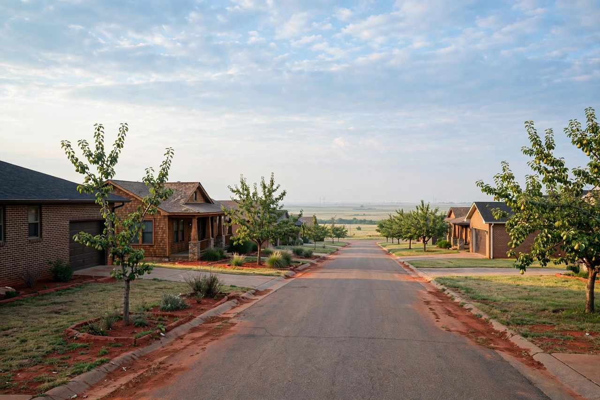

Rodent Control · Ringling, OK
Same-Day Rodent Control in Ringling, OK
Hearing scratching at night or finding droppings in Ringling? Murvo is a rodent-only specialist offering same-day service from local crews. We identify the species, remove the infestation, clean up the mess, and exclude rodents for good. Pricing is flat-rate and quoted in writing, the work is guaranteed in writing, and coverage extends across Jefferson County for homes and businesses alike. Crews route daily across Jefferson County - 1 ZIP codes covered, including 73456.
24/7Availability
1ZIP codes covered
Same-dayResponse
Licensed · Upfront options · Written guarantees · Fully insured
Ringling at a glance
Local Rodent Control for Ringling, OK.
Jefferson County
Countysouthern Oklahoma
RegionNorman · 74 mi
Nearest metro89 miles south of Oklahoma City
From Oklahoma City1
ZIP codes covered Service by service in Ringling
Rodent Control Services Available in Ringling
Thirty rodent services, one local standard in Ringling: inspection-led, exclusion-first, and quoted in writing before work begins. Browse the full list for Jefferson County below - each section explains what the service involves here, what it typically costs nationally, and how fast we can start.
- 01Rodent Control↗
- 02Rodent Inspection↗
- 03Rodent Removal↗
- 04Rodent Exclusion↗
- 05Rodent Proofing↗
- 06Rat Control↗
- 07Mice Control↗
- 08Mouse Removal↗
- 09Rat Removal↗
- 10Rodent Trapping↗
- 11Rodent Baiting↗
- 12Rodenticide Application↗
- 13Attic Rodent Removal↗
- 14Crawl Space Rodent Removal↗
- 15Wall Rodent Removal↗
- 16Kitchen Rodent Control↗
- 17Garage Rodent Control↗
- 18Commercial Rodent Control↗
- 19Residential Rodent Control↗
- 20Emergency Rodent Removal↗
- 21Same-Day Rodent Control↗
- 22Rodent Damage Repair↗
- 23Rodent Waste Cleanup↗
- 24Rodent Disinfection↗
- 25Rodent Odor Removal↗
- 26Dead Rodent Removal↗
- 27Rodent Dropping Cleanup↗
- 28Rodent Exclusion for Roofs↗
- 29Rodent Exclusion for Vents↗
- 30Rodent Exclusion for Chimneys↗
Rodent Control in Ringling
Rodent Control in Ringling
A single mouse sighting in a Ringling kitchen rarely means a single mouse. Rodents breed fast, contaminate food areas, and gnaw wiring long before the damage is obvious. Murvo responds with same-day appointments where available, a background-checked local crew, and a coordinated program of trapping, exclusion, cleanup guidance, and monitoring that keeps working after the first visit ends.
In Ringling, rodent control is not a generic spray-and-go service. Rodents exploit rooflines and attic vents, garage door seals, weep holes, and foundation cracks opened by shifting clay soil in ranch and suburban single-family homes, older bungalows, and new-build subdivisions, and a fix that ignores those routes does not last. Murvo's Ringling team inspects first, shows you the evidence - droppings, gnaw marks, entry gaps - and then lays out the work with a flat-rate written quote. We serve all of Jefferson County from Ringling, including Cornish, Healdton, and every job is covered by our written workmanship guarantee. Around Velma, Cornish, Healdton, the pattern is similar: Norway rat (Rattus norvegicus) finds rooflines and attic vents, garage door seals, weep holes, and foundation cracks opened by shifting clay soil first, and lasting rodent control has to close those routes.
We start by identifying whether Roof rat (Rattus rattus), Norway rat (Rattus norvegicus), or both are active, because each species nests, feeds, and travels differently. Nothing is sealed while animals remain inside. Traps are placed on proven runways along walls, beams, and pipe runs, checked on schedule, and adjusted as catches change. Once numbers fall, exclusion sealing closes the route back in, droppings and nesting debris are removed hygienically, and follow-up monitoring checks the attic, crawl space, and kitchen until readings stay clear. That order protects your home.
Getting started takes one conversation, day or night, because our lines stay open 24/7. Work proceeds only after your approval, in stages you can follow, and a final walkthrough reviews every seal and every monitoring result before sign-off. We book a window that suits your household, confirm access needs in advance, and arrive prepared. Questions after sign-off are welcome at any hour, and the same written record helps any technician pick up your case immediately.
In most of Ringling, we can offer a same-day appointment for rodent control, and our lines are open 24/7 for urgent cases like scratching in the walls or a rodent in a living area. Your technician inspects first, explains the plan, and quotes a flat rate in writing before any work begins, so help starts fast without surprises. A Ringling inspection confirms it on site - dropping size, gnaw marks, and entry points tell the story quickly.
Murvo does not quote rodent control sight unseen, because species, activity, and sealing needs change the work involved. After inspection you get one flat-rate written quote, and that is the figure you pay. As national context only, Angi's 2026 figures put rat and mouse removal and control at an average of $396, with a typical range of $189 to $655 — a benchmark, not a Murvo price.
Rodent Inspection in Ringling
Rodent Inspection in Ringling
In Jefferson County, ranch and suburban single-family homes, older bungalows, and new-build subdivisions often hide entry gaps that stay invisible from ground level: lifted shingles, unsealed pipe penetrations, and garage door corners where Roof rat (Rattus rattus) and Norway rat (Rattus norvegicus) slip through. A Murvo rodent inspection covers the roofline, foundation, attic, and crawl space in one visit, so you learn exactly where rodents get in and what closing each gap involves.
When you need rodent inspection in Ringling, the job starts with what is actually happening in your part of Jefferson County. Murvo crews work Ringling every week, so they know how Roof rat (Rattus rattus) and Norway rat (Rattus norvegicus) behave around ranch and suburban single-family homes, older bungalows, and new-build subdivisions here - and where they get in: rooflines and attic vents, garage door seals, weep holes, and foundation cracks opened by shifting clay soil. We arrive equipped for the full job, confirm the flat rate in writing before work begins, and cover the whole Ringling area, including Cornish, Healdton. No call-center runaround and no open-ended hourly billing - just a local crew, a clear plan, and a written quote you approve first. Seasonal timing matters for rodent inspection in Ringling: rodents surge in Ringling from September through March.
Think of the inspection as three passes. Each pass is photographed, and nothing is recommended without evidence from one of those passes to support it. The exterior pass checks siding, vents, pipe entries, and roof junctions for gaps and rub marks. The interior pass covers attic insulation, crawl-space corners, and kitchen voids for droppings, nests, and gnawing. The review pass brings it together: species, likely numbers, contamination, and the order in which fixes should happen. The report separates what rodents are doing now from what the structure merely allows them to do later.
After booking, we confirm your time window by text or call. On arrival, your background-checked technician checks in, protects floors and access points, and works through a set inspection checklist inside and out. Before leaving, they review photos and priorities with you, leave the written findings, and schedule any follow-up work you approve. The inspection itself is backed by licensed, insured service and our written workmanship guarantee on quoted work.
You do not have to wait days for answers in Ringling. Same-day rodent inspection appointments are available in most areas, urgent calls are taken 24/7, and most home inspections take under an hour. You finish the visit with photos, written findings, and flat-rate pricing for anything we recommend. The written quote for your Ringling property will spell out exactly which of these applies before any work starts.
Your exact rodent inspection price is confirmed before we visit, and any follow-up work is quoted as a flat rate in writing after the inspection — no hourly billing. For context, Angi's 2026 data puts a professional rodent inspection nationally at $100 to $200, often credited toward the job if you proceed.
Rodent Removal in Ringling
Rodent Removal in Ringling
How quickly should you act once droppings appear in living areas? Promptly, because contamination builds daily and young rodents mature fast. Murvo responds with licensed, insured, background-checked technicians who remove animals hygienically, explain when each room is safe again, and back the completed removal with a written workmanship guarantee.
Homeowners in Ringling call Murvo for rodent removal because the problem here is specific: Roof rat (Rattus rattus) pressure around ranch and suburban single-family homes, older bungalows, and new-build subdivisions, tight access at rooflines and attic vents, garage door seals, weep holes, and foundation cracks opened by shifting clay soil, and activity that follows the local season. Our Jefferson County crews diagnose the real source before recommending work, explain the options in plain language, and quote one flat rate in writing. Across Ringling - including Cornish, Healdton - every visit is backed by licensed, insured technicians and our written workmanship guarantee. The Ringling crews who handle rodent removal also handle the follow-through - proofing, cleanup, and monitoring - so one visit can close the whole problem.
We favor trap-based, no-poison removal first where practical, which is safer around children and pets and avoids animals dying in hidden voids. Traps are matched to the species and setting, placed where droppings and rub marks show real travel routes, then cleared and reset until numbers reach zero. Dead animals in inaccessible places are located and retrieved before odor develops, contaminated nesting material is removed, and sealing recommendations are prioritized so the route indoors closes permanently. Monitoring then confirms the home stays clear.
Once you book rodent removal in Ringling, we agree a time window and your technician arrives with traps, protective equipment, and a clear plan. When catches reach zero, we walk through the results, discuss sealing, and confirm your written guarantee before closing the job. Progress is photographed and shared with you throughout the program. The first visit confirms activity and sets traps; return visits clear and reset them on schedule. Nothing is left unexplained.
When rodents are active indoors in Ringling, waiting rarely helps. Rodent removal can usually start the same day you call, our line answers 24/7 for a rodent loose in a living area, and the first visit sets traps straight away. Scheduled returns then clear and reset them until monitoring shows the home is clear. In Jefferson County, most cases involve the Roof rat (Rattus rattus) and the Norway rat (Rattus norvegicus), so the inspection focuses on their routes first.
How many animals are active, which species they are, and how much sealing follows removal all shape the price, so we assess first and then quote one flat rate in writing. Angi's 2026 national context — an average of $396 and a typical $189 to $655 range for rat and mouse removal — is provided for comparison only; your written quote is the exact Murvo figure.
Rodent Exclusion in Ringling
Rodent Exclusion in Ringling
Exclusion is also the safest long-term strategy for Ringling homes, because a sealed house needs far less bait and fewer repeat treatments. Murvo's licensed, insured crews finish roof, vent, and chimney work to weatherproof standards, walk every sealed opening with you afterwards, and back the result with a written workmanship guarantee you can hold us to.
Homeowners in Ringling call Murvo for rodent exclusion because the problem here is specific: Roof rat (Rattus rattus) pressure around ranch and suburban single-family homes, older bungalows, and new-build subdivisions, tight access at rooflines and attic vents, garage door seals, weep holes, and foundation cracks opened by shifting clay soil, and activity that follows the local season. Our Jefferson County crews diagnose the real source before recommending work, explain the options in plain language, and quote one flat rate in writing. Across Ringling - including Cornish, Healdton - every visit is backed by licensed, insured technicians and our written workmanship guarantee. The Ringling crews who handle rodent exclusion also handle the follow-through - proofing, cleanup, and monitoring - so one visit can close the whole problem.
Exclusion begins with a full exterior survey, paying particular attention to junctions where different materials meet, because those seams and transitions open up as a building ages and settles. Door sweeps are fitted, pipe gaps closed, and specialist roof, vent, and chimney sealing finished to weatherproof standards. Each opening is sealed with materials matched to it: copper mesh packed into gaps, hardware cloth over vents, metal flashing at roof junctions, and quality sealants for smaller cracks. Active animals are trapped out first.
After booking rodent exclusion in Ringling, your technician first surveys the whole exterior and confirms which openings are active. You receive a flat-rate written quote listing each seal before work starts. Sealing is then completed opening by opening, photographed as we go, and finished with a walkthrough together. Follow-up monitoring is arranged, and every seal is covered by the written workmanship guarantee. No opening is sealed without being shown to you first.
The first step is a survey, and in Ringling we can often schedule that survey the same day you call about rodent exclusion. Sealing follows once active animals are cleared — nothing is ever sealed inside — and most homes are fully sealed within days, with entry points near wiring or food areas handled first. A Ringling inspection confirms it on site - dropping size, gnaw marks, and entry points tell the story quickly.
For national context, Angi's 2026 data puts basic exclusion at $200 to $600, depending on access and the number of openings. That is a benchmark, not a Murvo price. After surveying your Ringling home, we list every opening that needs sealing and quote one flat rate in writing, so you pay for the work your property actually needs and nothing more.
Rodent Proofing in Ringling
Rodent Proofing in Ringling
As colder weather approaches Jefferson County, rodents actively hunt for warm indoor shelter, and unsealed homes are found fast. A Murvo rodent proofing survey checks the roofline, vents, utility entries, and doors before that rush begins. Because proofing prevents infestations instead of reacting to them, it reduces reliance on baits and is backed by our written workmanship guarantee.
In Ringling, rodent proofing is not a generic spray-and-go service. Rodents exploit rooflines and attic vents, garage door seals, weep holes, and foundation cracks opened by shifting clay soil in ranch and suburban single-family homes, older bungalows, and new-build subdivisions, and a fix that ignores those routes does not last. Murvo's Ringling team inspects first, shows you the evidence - droppings, gnaw marks, entry gaps - and then lays out the work with a flat-rate written quote. We serve all of Jefferson County from Ringling, including Cornish, Healdton, and every job is covered by our written workmanship guarantee. Seasonal timing matters for rodent proofing in Ringling: rodents surge in Ringling from September through March.
Materials follow the same standard as full exclusion work: copper mesh packed into irregular gaps, hardware cloth over openings that need airflow, flashing at vulnerable junctions, and sealants matched to smaller cracks. The written plan photographs each weakness, states who handles it, and schedules a seasonal re-check, since new gaps appear as a building ages and proofing works best as maintenance. Around kitchens, pipe runs and the voids behind units receive particular attention, because warmth and food meet there. Seasonal timing is noted in the plan as well.
Book a rodent proofing survey in Ringling and we will arrange a visit time that suits your household, often the same day. Your technician walks the property with you, photographs weak points, and explains the plan in plain language. You receive a flat-rate written quote separating essential from optional work. Approved sealing is completed cleanly, then a seasonal re-check is scheduled. The finished work is fully guaranteed in writing by Murvo.
Rodent proofing is preventive, so there is rarely a rush, but surveys in Ringling can often be arranged the same day you call, and always within a few days. Most proofing work is completed in a single visit once you approve the plan, and booking before colder weather gives your home protection ahead of the seasonal rush indoors. Around Ringling, ranch and suburban single-family homes, older bungalows, and new-build subdivisions give rodents the most cover, which is why entry points get checked before traps are set.
For national context, Angi's 2026 data puts exclusion, the core of proofing, at $200 to $600 for basic work. That figure is a benchmark, not a Murvo price. After surveying your Ringling property, we separate quick homeowner wins from specialist sealing and quote the professional work as one flat rate in writing, so you can stage spending sensibly.
Rat Control in Ringling
Rat Control in Ringling
What separates control from a temporary lull? Monitoring that continues after the last catch. Murvo keeps checking until routes stay quiet, removes trapped rats hygienically, and finishes with exclusion so replacements cannot follow the same path. Licensed, insured technicians document every visit, and urgent calls are answered 24/7.
Homeowners in Ringling call Murvo for rat control because the problem here is specific: Roof rat (Rattus rattus) pressure around ranch and suburban single-family homes, older bungalows, and new-build subdivisions, tight access at rooflines and attic vents, garage door seals, weep holes, and foundation cracks opened by shifting clay soil, and activity that follows the local season. Our Jefferson County crews diagnose the real source before recommending work, explain the options in plain language, and quote one flat rate in writing. Across Ringling - including Cornish, Healdton - every visit is backed by licensed, insured technicians and our written workmanship guarantee. Coverage for rat control spans 1 ZIP codes in Jefferson County, including 73456.
Control starts with species and route identification, because roof rats and Norway rats behave and enter very differently. Trapped rats are removed hygienically, and each visit is documented with locations and counts. We then pair the program with roofline and entry-point exclusion, plus attic removal and cleanup where nests are found overhead. Technicians pre-bait unset traps along proven runways so wary rats feed confidently, then set them and return to check, clear, and adjust placements until activity stops. Progress is visible at every visit.
Call and describe where signs are strongest; that directs the first inspection. Your technician maps routes and harborage, explains the pre-baiting plan honestly, including why results build over days, and provides the written quote. Approval starts the program the same visit, with follow-up checks booked ahead so momentum never depends on you calling back. You will know after each visit what was caught, where placements changed, and what the next check is specifically looking for.
Call day or night — urgent rat control calls in Ringling are answered 24/7, and a same-day inspection can usually start the program. Pre-baiting begins on that first visit once you approve the written quote, traps are set when rats are feeding confidently, and scheduled checks continue until activity stops. In Jefferson County, most cases involve the Roof rat (Rattus rattus) and the Norway rat (Rattus norvegicus), so the inspection focuses on their routes first.
Species, colony size, and the number of entry points to seal all affect rat work, which is why Murvo inspects first and quotes one flat rate in writing. Angi's 2026 figures, given for national context only, average rat control and removal at $396 and typically run $189 to $655; the written quote for your Ringling home is the exact price.
Mice Control in Ringling
Mice Control in Ringling
Mice slip into ranch and suburban single-family homes, older bungalows, and new-build subdivisions in Ringling through rooflines and attic vents, garage door seals, weep holes, and foundation cracks opened by shifting clay soil and settle near warmth and food: behind appliances, inside attic voids, and along pipe runs. Because they investigate new objects quickly, clustered traps work fast when placed correctly. Our licensed, insured technicians also advise on food storage and scent-trail cleaning, then confirm with follow-up visits that activity has genuinely stopped.
In Ringling, mice control is not a generic spray-and-go service. Rodents exploit rooflines and attic vents, garage door seals, weep holes, and foundation cracks opened by shifting clay soil in ranch and suburban single-family homes, older bungalows, and new-build subdivisions, and a fix that ignores those routes does not last. Murvo's Ringling team inspects first, shows you the evidence - droppings, gnaw marks, entry gaps - and then lays out the work with a flat-rate written quote. We serve all of Jefferson County from Ringling, including Cornish, Healdton, and every job is covered by our written workmanship guarantee. The Ringling crews who handle mice control also handle the follow-through - proofing, cleanup, and monitoring - so one visit can close the whole problem.
Mice travel short, familiar routes, hugging walls and rarely crossing open floors. Technicians clear and reset on schedule, tracking numbers visit by visit until they reach zero. Sealing then closes pencil-width gaps behind baseboards, around radiator pipes, and at service entries, while scent-marked surfaces are cleaned so new mice find no welcoming trail. Control exploits that habit: traps are clustered along baseboards, behind appliances, and inside attic voids where droppings concentrate, rather than scattered hopefully around rooms. That is why placements stay fixed between checks unless evidence, rather than impatience, gives a reason to move them.
Book with one call and tell us which rooms show signs; same-day surveys are often possible. Your technician inspects kitchen, attic, and voids, explains the route map, and quotes in writing before traps are set. Check visits are scheduled immediately, and each one reports catches plainly until the final confirmation visit shows activity has stopped. The final confirmation matters, because mice can go quiet briefly while a nest remains, and monitoring distinguishes quiet from genuinely finished.
Mice multiply fast, so mice control in Ringling is built to start fast too: a survey can often be arranged the same day you call, with traps set on that first visit once the quote is approved. Because mice investigate new objects quickly, catches usually begin soon after, and check visits follow until a final confirmation shows activity has stopped. Around Ringling, ranch and suburban single-family homes, older bungalows, and new-build subdivisions give rodents the most cover, which is why entry points get checked before traps are set.
The number of rooms affected and the amount of sealing required set the price, so Murvo surveys first and quotes one flat rate in writing. For national context only, Angi's 2026 data averages rat and mouse control and removal at $396, typically $189 to $655 — not a Murvo price; your written quote is exact.
Mouse Removal in Ringling
Mouse Removal in Ringling
Mice nest where it is warm and undisturbed: attics, wall voids, crawl spaces, and behind kitchen cabinets in ranch and suburban single-family homes, older bungalows, and new-build subdivisions across Ringling. They feed close to those nests, following rooflines and attic vents, garage door seals, weep holes, and foundation cracks opened by shifting clay soil and pipe runs between rooms. Our technicians check warm spots near water heaters and appliances where mice raise young, so no nesting site is missed during removal.
Homeowners in Ringling call Murvo for mouse removal because the problem here is specific: Roof rat (Rattus rattus) pressure around ranch and suburban single-family homes, older bungalows, and new-build subdivisions, tight access at rooflines and attic vents, garage door seals, weep holes, and foundation cracks opened by shifting clay soil, and activity that follows the local season. Our Jefferson County crews diagnose the real source before recommending work, explain the options in plain language, and quote one flat rate in writing. Across Ringling - including Cornish, Healdton - every visit is backed by licensed, insured technicians and our written workmanship guarantee. Homes near Velma tend to show activity first in Ringling, which is why inspections start with rooflines and attic vents, garage door seals, weep holes, and foundation cracks opened by shifting clay soil.
We favor trap-based, no-poison removal, which is safer around children and pets and avoids mice dying in hidden voids. We also advise on safe cleaning of cabinets and storage areas afterwards, so your kitchen feels properly yours again once the program is complete and monitoring confirms zero activity. Sealing then closes the route permanently. Cleanup follows CDC guidance: droppings and nesting debris are never dry-swept, because that can spread contamination; surfaces are disinfected first, then waste is removed hygienically. That finish is guaranteed in writing.
As catches fall, the focus shifts in order: final clearing, disinfection of affected areas, then sealing of access points. Your technician reviews the catch record with you at sign-off, confirms which rooms are fully safe to use, and leaves prevention advice plus guarantee paperwork. Seasonal proofing can be arranged if your property has repeated fall problems. If signs reappear during monitoring, placements are restored under the same agreed program rather than starting a new conversation from scratch.
In Ringling, mouse removal can often begin the same day you call, especially where mice are active in kitchens or living areas. The first visit surveys nesting sites and sets traps immediately after you approve the quote; because mice investigate traps quickly, catches usually start fast, and return visits continue until numbers reach zero. If you are seeing signs now, an inspection this week is the fastest way to know which situation you are in.
Rooms involved and sealing needed determine the cost of removal, so we survey first and agree a flat rate in writing before work begins. As national context only, Angi's 2026 data averages rat and mouse removal at $396, with a typical range of $189 to $655; that benchmark is not a Murvo price, and your written quote covers your exact program.
Rat Removal in Ringling
Rat Removal in Ringling
If a rat is loose in a living area tonight, call; our lines stay open 24/7. Murvo pairs urgent response with a documented plan: hygienic removal across repeat visits, evidence from monitoring at the end, and a final walkthrough, so clearance is demonstrated to you rather than simply announced.
When you need rat removal in Ringling, the job starts with what is actually happening in your part of Jefferson County. Murvo crews work Ringling every week, so they know how Roof rat (Rattus rattus) and Norway rat (Rattus norvegicus) behave around ranch and suburban single-family homes, older bungalows, and new-build subdivisions here - and where they get in: rooflines and attic vents, garage door seals, weep holes, and foundation cracks opened by shifting clay soil. We arrive equipped for the full job, confirm the flat rate in writing before work begins, and cover the whole Ringling area, including Cornish, Healdton. No call-center runaround and no open-ended hourly billing - just a local crew, a clear plan, and a written quote you approve first. The Ringling crews who handle rat removal also handle the follow-through - proofing, cleanup, and monitoring - so one visit can close the whole problem.
Removal begins by establishing species and the scale of the problem, because a single transient rat and an attic colony need very different programs. Sealing follows once the property is clear. Technicians pre-bait unset traps on confirmed runways so cautious rats feed without fear, then set them, returning frequently to remove animals hygienically and adjust placements as activity shifts. Attic colonies may need dedicated attic work, while a carcass in a void calls for retrieval and odor treatment. Nothing is rushed at this stage.
Book and we will agree a visit time, with same-day appointments for active infestations where available. Repeat visits are scheduled in advance, progress is reported after each one, and sealing follows once catches stop and monitoring stays clear. Your technician assesses the colony, explains each stage, and confirms the written quote before pre-baiting begins. Every visit is documented with counts and locations, so the final clearance rests on a complete record rather than a single quiet check.
Rats in a living area cannot wait for a routine slot. In Ringling, rat removal can usually start the same day you call and our line answers 24/7 for urgent cases. Pre-baiting starts on the first visit after you approve the written quote, traps are set once rats feed confidently — typically within days — and frequent returns run until monitoring confirms the colony is gone. In Jefferson County, most cases involve the Roof rat (Rattus rattus) and the Norway rat (Rattus norvegicus), so the inspection focuses on their routes first.
Colony size, access, and the sealing needed afterwards drive the price, so Murvo assesses the property first and quotes a flat rate in writing covering the full program. Angi's 2026 data, for national context only, averages rat removal at $396 and typically ranges from $189 to $655; that is a benchmark, not a Murvo price.
Rodent Trapping in Ringling
Rodent Trapping in Ringling
Why choose trapping over poison in a family home? Every result is visible, countable, and removable, with no chemicals loose indoors and no animals dying in hidden voids. Murvo offers snap, multi-catch, and live-capture options, explains each placement for pet and child safety, and guarantees the finished program in writing.
Homeowners in Ringling call Murvo for rodent trapping because the problem here is specific: Roof rat (Rattus rattus) pressure around ranch and suburban single-family homes, older bungalows, and new-build subdivisions, tight access at rooflines and attic vents, garage door seals, weep holes, and foundation cracks opened by shifting clay soil, and activity that follows the local season. Our Jefferson County crews diagnose the real source before recommending work, explain the options in plain language, and quote one flat rate in writing. Across Ringling - including Cornish, Healdton - every visit is backed by licensed, insured technicians and our written workmanship guarantee. Coverage for rodent trapping spans 1 ZIP codes in Jefferson County, including 73456.
A program opens with mapping, not trap placement. Technicians read droppings, rub marks, and gnaw damage to reconstruct nightly routes through attics, basements, and kitchens. Devices are then selected for each location: snap traps for decisive results, multi-catch units on busy mouse routes, live-capture where release is preferred. For rats, pre-baiting runs several days before traps are set, the step most amateur attempts skip. Every device is numbered, recorded, and revisited on a fixed schedule. The map also prevents a common mistake: removing a device that looks empty while its route is still active.
Call to book, and a first visit can often happen the same day. Nothing proceeds without approval. Scheduled returns then clear, reset, and record catches, sharing the running total with you at every single visit. That visit maps activity, places or pre-baits devices, and produces your written quote for the full program including checks. Catch records are never an afterthought; they are the evidence that decides when trapping ends and monitoring alone takes over.
In Ringling, a rodent trapping program can usually start the same day you call, with traps placed or pre-baiting begun on the first visit after you approve the quote. Mice often investigate within the first night, while wary rats need a few days of pre-baiting before traps are set. Scheduled checks then keep the program moving until numbers reach zero. In Jefferson County, activity follows the local season, so timing the work matters as much as the method.
Rather than charging by the trap or by the visit, Murvo inspects first and quotes rodent trapping as one flat rate in writing for the complete program, including its check visits. Price depends on species, activity level, and how many checks are needed, and there is no hourly billing at any stage, so there are no per-visit surprises.
Rodent Baiting in Ringling
Rodent Baiting in Ringling
What rules govern bait near children, pets, and wildlife in Oklahoma? Strict ones, and Murvo follows them plainly. State rules restrict anticoagulant rodenticides, and Murvo applies the same care everywhere: no loose bait, no open trays, no unmonitored stations. Before placement, you review locations, risks, and alternatives with a licensed technician.
In Ringling, rodent baiting is not a generic spray-and-go service. Rodents exploit rooflines and attic vents, garage door seals, weep holes, and foundation cracks opened by shifting clay soil in ranch and suburban single-family homes, older bungalows, and new-build subdivisions, and a fix that ignores those routes does not last. Murvo's Ringling team inspects first, shows you the evidence - droppings, gnaw marks, entry gaps - and then lays out the work with a flat-rate written quote. We serve all of Jefferson County from Ringling, including Cornish, Healdton, and every job is covered by our written workmanship guarantee. Homes near Velma tend to show activity first in Ringling, which is why inspections start with rooflines and attic vents, garage door seals, weep holes, and foundation cracks opened by shifting clay soil.
Baiting follows Inspect, Remove, Exclude, Clean, and Monitor, and it never stands alone. Every station is tamper-resistant, locked, labeled, and anchored, with placement photographed for your records. We return on schedule to check consumption, record amounts, and adjust positions, and stations are removed when activity ends rather than left indefinitely. After a full inspection maps activity, background-checked technicians choose station locations along runways, fence lines, and entry points, away from pet play areas and food storage. Loose bait is never used anywhere.
Booking starts with a conversation about pets, children, and wildlife on your property, because that shapes placement before we arrive. Approved stations are installed locked and labeled that visit, with monitoring dates booked before we leave. The inspection visit maps activity, agrees each proposed station location with you, and confirms the written quote. Nothing about placement, product type, or monitoring frequency is left vague, and you can ask for the record at any point.
In Ringling, rodent baiting starts with an inspection visit we can often arrange the same day you call. Stations are only placed after activity is mapped and you approve the written quote and each location, so setup is deliberate rather than rushed. Monitoring visits then run on a fixed schedule until consumption stops and activity is confirmed clear. Murvo's Ringling crews explain the finding either way, and the flat-rate quote leaves the decision with you.
Baiting cost depends on how many locked stations your property needs and how long monitoring runs, so Murvo inspects and maps activity first, then quotes one flat rate in writing covering placement and scheduled checks. There are no per-visit surprises, and because our approach is exclusion-first, the goal is always to reduce and eventually remove stations, not maintain them forever.
Rodenticide Application in Ringling
Rodenticide Application in Ringling
In ranch and suburban single-family homes, older bungalows, and new-build subdivisions, product choice is only half the decision; placement and oversight matter just as much near rooflines and attic vents, garage door seals, weep holes, and foundation cracks opened by shifting clay soil routes in Jefferson County. Licensed Murvo technicians use tamper-resistant locked stations exclusively, map and label every unit, record amounts at each visit, and retrieve accessible carcasses promptly to limit odor and secondary risks.
When you need rodenticide application in Ringling, the job starts with what is actually happening in your part of Jefferson County. Murvo crews work Ringling every week, so they know how Roof rat (Rattus rattus) and Norway rat (Rattus norvegicus) behave around ranch and suburban single-family homes, older bungalows, and new-build subdivisions here - and where they get in: rooflines and attic vents, garage door seals, weep holes, and foundation cracks opened by shifting clay soil. We arrive equipped for the full job, confirm the flat rate in writing before work begins, and cover the whole Ringling area, including Cornish, Healdton. No call-center runaround and no open-ended hourly billing - just a local crew, a clear plan, and a written quote you approve first. Around Velma, Cornish, Healdton, the pattern is similar: Norway rat (Rattus norvegicus) finds rooflines and attic vents, garage door seals, weep holes, and foundation cracks opened by shifting clay soil first, and lasting rodenticide application has to close those routes.
Documentation runs through the whole program. Dead rodents are retrieved promptly where accessible. Meanwhile exclusion work proceeds in parallel, sealing entry points so dependence on chemical control shrinks with each visit rather than becoming permanent. Every product is recorded with its label and safety information, which stays with you. Stations are positioned away from areas children and pets use, checked against Oklahoma restrictions before selection, and removed once monitoring confirms activity has ended. State rules are rechecked whenever a product changes, since permitted options can differ between jurisdictions and seasons.
Before the visit, tell us about children, pets, livestock, and wildlife using the property; that information shapes product and placement decisions. On the day, your background-checked technician installs any approved stations locked and labeled, records the details, and explains what to watch for. Scheduled checks follow until activity ends and stations are removed. Label information, amounts, and visit dates stay in your records throughout, so the treatment history is complete and available whenever needed.
No responsible rodenticide application starts without an inspection, and in Ringling that inspection can often be scheduled the same day you call. If treatment is justified and you approve the written quote, locked stations are installed on that visit. Monitoring then runs on schedule, and treatment stops as soon as the data shows activity has ended. In Jefferson County, activity follows the local season, so timing the work matters as much as the method.
Application cost depends on the number of locked stations, the product required under Oklahoma rules, and how long monitoring runs. Murvo inspects first, explains whether trapping or exclusion could avoid chemical control entirely, and then quotes one flat rate in writing before work begins. The quote covers scheduled monitoring visits, so there are no per-visit surprises later.
Attic Rodent Removal in Ringling
Attic Rodent Removal in Ringling
Most Ringling attic jobs start with nighttime scratching that grows bolder over a week. Murvo inspects the attic, roof, and eaves together, identifies whether Roof rat (Rattus rattus) or Norway rat (Rattus norvegicus) is overhead, traps up there, and seals the roofline afterwards. One flat-rate written quote is agreed before removal begins.
Homeowners in Ringling call Murvo for attic rodent removal because the problem here is specific: Roof rat (Rattus rattus) pressure around ranch and suburban single-family homes, older bungalows, and new-build subdivisions, tight access at rooflines and attic vents, garage door seals, weep holes, and foundation cracks opened by shifting clay soil, and activity that follows the local season. Our Jefferson County crews diagnose the real source before recommending work, explain the options in plain language, and quote one flat rate in writing. Across Ringling - including Cornish, Healdton - every visit is backed by licensed, insured technicians and our written workmanship guarantee. In Ringling, attic rodent removal calls most often involve ranch and suburban single-family homes, older bungalows, and new-build subdivisions, where rooflines and attic vents, garage door seals, weep holes, and foundation cracks opened by shifting clay soil decide whether the fix holds.
Cleanup overhead demands care. Droppings and nesting material are never dry-swept, because that can spread contamination into the air; surfaces are disinfected first, then waste is removed hygienically by technicians in protective equipment. Contaminated insulation is assessed honestly, with repair referrals where replacement is warranted. Poison is avoided in attics deliberately, since animals dying in inaccessible corners create odor and retrieval problems. Adjoining crawl spaces are checked before the job is signed off as complete. The result is a documented attic: cleared, sealed, cleaned where needed, and verified quiet before closure.
After booking, we confirm safe attic access and any pets or stored items to work around. On arrival, your background-checked technician inspects, explains the plan in plain language, and starts trapping once you approve the written quote. Follow-up visits are booked ahead to clear traps and complete sealing. A final monitoring check and walkthrough confirm the result before we close the job. Insulation and wiring findings are reported to you too.
In Ringling, attic rodent removal visits are often available the same day, and we prioritize attics where chewed wiring creates a fire risk. Trapping starts on the first visit after you approve the written quote, checks run on schedule, and most attics are cleared and sealed within days, with monitoring left briefly to confirm nothing remains inside. A Ringling inspection confirms it on site - dropping size, gnaw marks, and entry points tell the story quickly.
Attic costs depend on how many animals are active, how much sealing the roofline needs, and whether contaminated insulation requires cleanup, so Murvo inspects first and quotes one flat rate in writing. That quote covers the removal program described, with cleanup options priced separately in writing before you decide, so there are no surprises once work is underway.
Crawl Space Rodent Removal in Ringling
Crawl Space Rodent Removal in Ringling
In ranch and suburban single-family homes, older bungalows, and new-build subdivisions, the space underneath offers rodents shelter, burrowing ground at vents, and pipe runs reached through rooflines and attic vents, garage door seals, weep holes, and foundation cracks opened by shifting clay soil across Jefferson County. Standing water and leaking pipes raise pressure further, so technicians flag moisture problems during inspection too. Removal also traces wall-void routes upward, because below-house activity often connects to the attic.
Homeowners in Ringling call Murvo for crawl space rodent removal because the problem here is specific: Roof rat (Rattus rattus) pressure around ranch and suburban single-family homes, older bungalows, and new-build subdivisions, tight access at rooflines and attic vents, garage door seals, weep holes, and foundation cracks opened by shifting clay soil, and activity that follows the local season. Our Jefferson County crews diagnose the real source before recommending work, explain the options in plain language, and quote one flat rate in writing. Across Ringling - including Cornish, Healdton - every visit is backed by licensed, insured technicians and our written workmanship guarantee. Around Velma, Cornish, Healdton, the pattern is similar: Norway rat (Rattus norvegicus) finds rooflines and attic vents, garage door seals, weep holes, and foundation cracks opened by shifting clay soil first, and lasting crawl space rodent removal has to close those routes.
Cleanup beneath a home follows careful practice throughout. Droppings and nesting debris are never dry-swept, since disturbing them can spread contamination; surfaces are disinfected first, then waste is bagged and removed by technicians wearing protective equipment. Technicians also trace connections upward through wall voids, checking whether activity reaches the attic, and report moisture issues with practical recommendations. Photographs of every finished seal accompany your guarantee paperwork, creating a record of exactly what was closed. Vent and pier sealing is checked from inside the space, not assumed sound from a glance outside.
Before the visit, unlock crawl-space access and mention any known leaks or standing water. Sign-off includes a walkthrough of the documented results, photographs of finished sealing, and your guarantee confirmed in writing for the completed work. Your background-checked technician inspects with protective equipment, sets traps at active areas after approval, and books follow-up visits ahead. Moisture findings are included in the closing notes, since fixing leaks and standing water lowers rodent pressure long after removal ends.
In Ringling, crawl space rodent removal inspections can usually be arranged within a few days, and sooner where odors are drifting into living areas or activity sounds heavy. Trapping starts on the first visit after you approve the written quote, and clearance plus sealing follow in sequence, with monitoring left in place until the space below is confirmed quiet. That is also why Murvo pairs removal with exclusion in Ringling - treating the animal without closing rooflines and attic vents, garage door seals, weep holes, and foundation cracks opened by shifting clay soil rarely lasts.
Crawl-space costs depend on access, how many vents and gaps need sealing, and whether waste cleanup is required, so Murvo inspects first and quotes one flat rate in writing. If extra vents need sealing within the agreed scope, there are no surprises, and cleanup options are priced in writing before you decide whether to include them.
Wall Rodent Removal in Ringling
Wall Rodent Removal in Ringling
Wall voids are hidden highways through ranch and suburban single-family homes, older bungalows, and new-build subdivisions in Ringling: mice travel them between kitchens and attics, and rats use them to reach food unseen via rooflines and attic vents, garage door seals, weep holes, and foundation cracks opened by shifting clay soil. Our technicians carry inspection cameras for accessible voids, helping locate nests without opening large sections of drywall. If an animal has already died in the wall, retrieval and sanitation are handled too.
When you need wall rodent removal in Ringling, the job starts with what is actually happening in your part of Jefferson County. Murvo crews work Ringling every week, so they know how Roof rat (Rattus rattus) and Norway rat (Rattus norvegicus) behave around ranch and suburban single-family homes, older bungalows, and new-build subdivisions here - and where they get in: rooflines and attic vents, garage door seals, weep holes, and foundation cracks opened by shifting clay soil. We arrive equipped for the full job, confirm the flat rate in writing before work begins, and cover the whole Ringling area, including Cornish, Healdton. No call-center runaround and no open-ended hourly billing - just a local crew, a clear plan, and a written quote you approve first. Seasonal timing matters for wall rodent removal in Ringling: rodents surge in Ringling from September through March.
Once the void is clear, the route gets closed and the space made safe. Baseboard and pipe gaps linked to kitchen activity are sealed as part of wider proofing. If a rodent has died inside, retrieval is followed by sanitation: contaminated material is never dry-swept, surfaces are disinfected first, and odor treatment discourages new animals from investigating. Monitoring at key access points and repeat quiet-wall checks then confirm silence before any minimal, agreed access cut is made good. Only then is the job closed, with the monitoring record and any sanitation work documented for you.
Between visits, note the times and rooms where sounds continue, since that pattern guides adjustments. Sign-off happens only when monitoring confirms silence, sealing and sanitation are complete, and your guarantee paperwork is confirmed in writing. Your background-checked technician clears traps, checks connected voids, and runs quiet checks at varied times of day. Silence is checked more than once before sign-off, because a single quiet evening can mislead when an animal simply moves elsewhere.
Persistent wall scratching in Ringling often qualifies for a same-day locating visit, especially when it is keeping you awake. On that first visit, once you approve the written quote, traps are set at void access points; because rodents travel the void nightly, results usually follow within days. Quiet-wall checks confirm the silence before we sign off. Around Ringling, ranch and suburban single-family homes, older bungalows, and new-build subdivisions give rodents the most cover, which is why entry points get checked before traps are set.
Wall work pricing depends on how precisely activity can be located and whether a minimal access cut is needed, which is why Murvo locates the activity first and quotes a flat rate in writing. That way wall access work never becomes an open-ended bill, and the quote covers the trapping, sealing, and monitoring described in your plan.
Kitchen Rodent Control in Ringling
Kitchen Rodent Control in Ringling
You wipe the counters, yet droppings keep appearing by morning. That pattern points to rodents moving through wall voids and cabinet voids while the house sleeps. Our kitchen rodent control in Ringling tracks those routes, removes the animals away from food surfaces, and seals the openings so the cycle finally stops for good.
In Ringling, kitchen rodent control is not a generic spray-and-go service. Rodents exploit rooflines and attic vents, garage door seals, weep holes, and foundation cracks opened by shifting clay soil in ranch and suburban single-family homes, older bungalows, and new-build subdivisions, and a fix that ignores those routes does not last. Murvo's Ringling team inspects first, shows you the evidence - droppings, gnaw marks, entry gaps - and then lays out the work with a flat-rate written quote. We serve all of Jefferson County from Ringling, including Cornish, Healdton, and every job is covered by our written workmanship guarantee. Seasonal timing matters for kitchen rodent control in Ringling: rodents surge in Ringling from September through March.
Work begins with a kitchen-focused inspection behind fridges, ovens and sinks, inside cabinets and along kickboards, reading droppings and grease marks to identify the species and its routes. We then trace activity into wall voids and adjoining rooms, seal gaps around waste pipes and cabinet holes with durable materials, disinfect contaminated areas, and monitor until activity stops completely. Discreet traps are placed away from food preparation surfaces, never loose poison where children, pets or food could reach it. Nothing is left to guesswork at any stage.
After you book, a licensed, background-checked Murvo technician arrives at the agreed time and inspects behind appliances, sinks and cabinets. Follow-up monitoring continues until kitchen activity stops, and the work is backed by our written workmanship guarantee. You receive a flat-rate written quote before anything starts. Once approved, trapping and sealing go ahead, contaminated areas are disinfected, and we explain the hygiene notes for your layout. You stay informed at every stage of the work.
Our phone lines are open 24/7, and kitchen cases involving droppings near food preparation areas are treated as a priority. In many Ringling cases we can arrange a same-day visit, subject to technician availability. Call, describe what you have found, and we will offer the earliest appointment we can. That is also why Murvo pairs removal with exclusion in Ringling - treating the animal without closing rooflines and attic vents, garage door seals, weep holes, and foundation cracks opened by shifting clay soil rarely lasts.
For national context, Angi's 2026 figures put rat extermination at $189-$655, averaging $396, but those figures are not Murvo prices. What your kitchen needs — trapping, sealing and follow-up monitoring — is assessed on site first. Murvo then provides one flat-rate written quote with no hourly billing, and work only begins after you approve it.
Garage Rodent Control in Ringling
Garage Rodent Control in Ringling
Cold weather pushes rodents toward the garage first. From there, a gap at rooflines and attic vents, garage door seals, weep holes, and foundation cracks opened by shifting clay soil can lead straight into the house. In Ringling, we inspect the full perimeter, clear nesting and activity, then proof the openings so vehicles, tools and stored belongings are no longer sharing space with unwanted animals overnight.
When you need garage rodent control in Ringling, the job starts with what is actually happening in your part of Jefferson County. Murvo crews work Ringling every week, so they know how Roof rat (Rattus rattus) and Norway rat (Rattus norvegicus) behave around ranch and suburban single-family homes, older bungalows, and new-build subdivisions here - and where they get in: rooflines and attic vents, garage door seals, weep holes, and foundation cracks opened by shifting clay soil. We arrive equipped for the full job, confirm the flat rate in writing before work begins, and cover the whole Ringling area, including Cornish, Healdton. No call-center runaround and no open-ended hourly billing - just a local crew, a clear plan, and a written quote you approve first. The Ringling crews who handle garage rodent control also handle the follow-through - proofing, cleanup, and monitoring - so one visit can close the whole problem.
Door corners get checked before anything else, because daylight showing at the base often marks the main entrance. Traps sit on those travel lines, not scattered at random. Nesting comes out safely, entry points get sealed with sturdy materials, and the door sweep is addressed where it has failed. From there we follow droppings and rub marks along walls, behind storage and toward utility lines entering the house. Final monitoring tells us whether the garage is truly quiet or whether activity is still passing through.
After booking, we agree access arrangements for vehicles and stored items. Your technician inspects, quotes in writing, and only starts once you approve. Removal, proofing and cleanup follow in a sensible order, so sealing never traps animals inside. Monitoring continues afterwards, and we report progress at each visit. If activity persists within the guarantee terms, we return and address it, as set out in your written guarantee. The plan is agreed with you before any work begins.
Our phones are answered 24/7, and garages with active nesting, damaged wiring or movement into the house are treated as urgent. Depending on technician schedules, a same-day appointment in Ringling is often possible. Describe the signs when you call and we will offer the earliest visit we can arrange. Around Ringling, ranch and suburban single-family homes, older bungalows, and new-build subdivisions give rodents the most cover, which is why entry points get checked before traps are set.
As a national benchmark, Angi's 2026 data shows rat extermination ranging from $189-$655, with an average of $396; that is context only, not a Murvo price. Garage work varies with size, activity and the proofing doors and walls require. After inspecting, Murvo quotes one flat rate in writing for trapping, nest removal, sealing and monitoring, for your approval before anything starts.
Commercial Rodent Control in Ringling
Commercial Rodent Control in Ringling
Loading doors rarely close perfectly, and bin stores rarely stay clean for long. Those two facts explain much commercial rodent pressure in Jefferson County. Our commercial rodent control in Ringling tackles docks, waste areas, kitchens and storage together, with scheduled monitoring and written reports that show managers exactly what changed between every single visit.
In Ringling, commercial rodent control is not a generic spray-and-go service. Rodents exploit rooflines and attic vents, garage door seals, weep holes, and foundation cracks opened by shifting clay soil in ranch and suburban single-family homes, older bungalows, and new-build subdivisions, and a fix that ignores those routes does not last. Murvo's Ringling team inspects first, shows you the evidence - droppings, gnaw marks, entry gaps - and then lays out the work with a flat-rate written quote. We serve all of Jefferson County from Ringling, including Cornish, Healdton, and every job is covered by our written workmanship guarantee. Around Velma, Cornish, Healdton, the pattern is similar: Norway rat (Rattus norvegicus) finds rooflines and attic vents, garage door seals, weep holes, and foundation cracks opened by shifting clay soil first, and lasting commercial rodent control has to close those routes.
What inspectors want is a system, and that is how we work. Risks get ranked by area, from food storage to waste handling, so urgent gaps close first. Staff learn which early signs to report and whom to call. Visits run outside peak trading where possible, and any live sighting during service gets handled quietly. Over time, trend notes show whether pressure is falling, holding or shifting to a new area, letting you adjust deliveries, storage or building repairs before a minor issue becomes a failed audit.
Reach out and we will arrange a survey at a time that does not disrupt trading. Once approved, initial removal and sealing begin discreetly, with a report after every visit for your compliance file. The surveyor walks the whole site, notes risks by area, and sends a written proposal before any work starts. Scheduled checks continue from there, reviews track the trend, and urgent sightings can be reported by phone at any hour, day or night.
Commercial calls are taken 24/7, and a live sighting during trading is handled as an emergency with discretion to protect customers and reputation. The visit we can offer in Ringling depends on technician availability, and we will always give you the earliest one possible. We can also advise on immediate steps to protect stock and your audit position while you wait. That is also why Murvo pairs removal with exclusion in Ringling - treating the animal without closing rooflines and attic vents, garage door seals, weep holes, and foundation cracks opened by shifting clay soil rarely lasts.
Commercial pricing depends on site size, sector, activity levels and how much exclusion and monitoring the site needs. Restaurants, warehouses and food premises are scoped individually after a survey. Murvo quotes a flat rate in writing for initial work, or a clear scheduled-service price for ongoing programs, before anything begins. There are no vague charges, and reports are included for your audit file.
Residential Rodent Control in Ringling
Residential Rodent Control in Ringling
Scratching above the ceiling rarely stays an attic-only problem. Rodents move through voids, drop into kitchens and nest where the house is warmest. Murvo's residential rodent control in Ringling treats the whole property as one system, and you receive a flat-rate written quote after inspection, before removal, sealing or cleanup work begins.
When you need residential rodent control in Ringling, the job starts with what is actually happening in your part of Jefferson County. Murvo crews work Ringling every week, so they know how Roof rat (Rattus rattus) and Norway rat (Rattus norvegicus) behave around ranch and suburban single-family homes, older bungalows, and new-build subdivisions here - and where they get in: rooflines and attic vents, garage door seals, weep holes, and foundation cracks opened by shifting clay soil. We arrive equipped for the full job, confirm the flat rate in writing before work begins, and cover the whole Ringling area, including Cornish, Healdton. No call-center runaround and no open-ended hourly billing - just a local crew, a clear plan, and a written quote you approve first. In Ringling, residential rodent control calls most often involve ranch and suburban single-family homes, older bungalows, and new-build subdivisions, where rooflines and attic vents, garage door seals, weep holes, and foundation cracks opened by shifting clay soil decide whether the fix holds.
Every home visit follows Inspect, Remove, Exclude, Clean and Monitor. Inspection covers attics, crawl spaces, garages, kitchens and the exterior, reading droppings, gnaw marks and rub marks to identify species and entry points such as rooflines and attic vents, garage door seals, weep holes, and foundation cracks opened by shifting clay soil. Removal uses targeted trapping placed safely away from children and pets. Exclusion seals the gaps found, cleanup disinfects contaminated areas, and monitoring visits confirm activity has ended rather than simply moved elsewhere in the house. Materials are chosen for durability, not the cheapest quick fix.
When you book, we note pets, children and access needs so the visit runs smoothly. Monitoring continues afterwards, with honest updates at every visit. We finish with prevention advice tailored to your home, and the guarantee covering the work is provided in writing. Your technician inspects, plans and quotes in writing before starting. Approved work removes the rodents, seals their entry points and cleans contaminated areas safely. The plan is agreed with you before any work begins.
You can call us 24/7, and homes where rodents are in living areas, kitchens or children's bedrooms are prioritized in scheduling. A same-day visit in Ringling is often possible, subject to technician availability. Share what you have seen or heard and we will offer the earliest appointment available, plus advice for the meantime. In Jefferson County, most cases involve the Roof rat (Rattus rattus) and the Norway rat (Rattus norvegicus), so the inspection focuses on their routes first.
Nationally, Angi's 2026 figures show rat extermination at $189-$655, averaging $396, but those are not Murvo prices for your home. Species, how established activity is, and the exclusion and cleanup needed determine the actual scope. Murvo inspects first and then gives one flat-rate written quote covering removal, sealing, cleaning and monitoring, with no hourly charges, for your approval before work begins.
Emergency Rodent Removal in Ringling
Emergency Rodent Removal in Ringling
Panic is a normal reaction to a rat in the kitchen. Take a breath, keep people and pets back, and call us. In Ringling, our emergency team assesses the risk first, removes the animal, checks for others nearby, and secures the opening it used, so one frightening night does not become a longer problem.
Homeowners in Ringling call Murvo for emergency rodent removal because the problem here is specific: Roof rat (Rattus rattus) pressure around ranch and suburban single-family homes, older bungalows, and new-build subdivisions, tight access at rooflines and attic vents, garage door seals, weep holes, and foundation cracks opened by shifting clay soil, and activity that follows the local season. Our Jefferson County crews diagnose the real source before recommending work, explain the options in plain language, and quote one flat rate in writing. Across Ringling - including Cornish, Healdton - every visit is backed by licensed, insured technicians and our written workmanship guarantee. Around Velma, Cornish, Healdton, the pattern is similar: Norway rat (Rattus norvegicus) finds rooflines and attic vents, garage door seals, weep holes, and foundation cracks opened by shifting clay soil first, and lasting emergency rodent removal has to close those routes.
Urgent removal still follows our full process, just faster at the front end. Where a rodent has died or nested indoors, cleanup and disinfection are arranged as part of the same plan. You are told honestly what has been completed, what needs a follow-up visit, and what to watch for, with everything recorded on your written quote and guarantee. Inspection identifies species and scale, removal tackles the animals present, and exclusion stops replacements arriving. The same careful standard applies on every single visit.
Call whenever the problem appears, day or night, and describe where the animal is and who is at home. The technician assesses the scene, explains the plan, and confirms the price in writing before starting. Removal and securing follow, then cleaning and monitoring. Keep children and pets away from the area until we arrive. Later checks confirm nothing else is active, and we review the outcome with you before closing the job as complete.
For emergencies, our line is open 24/7, every day, and calls from Ringling are triaged by risk — live rodents in living areas, food contamination and chewed wiring come first. We will offer the earliest visit our technicians can reach. Until then, we will talk you through simple steps to keep people and pets safe. The written quote for your Ringling property will spell out exactly which of these applies before any work starts.
For national context, Angi's 2026 data puts rat extermination at $189-$655, averaging $396, though emergency work is not priced from those figures and they are not Murvo prices. Location, numbers involved and the securing, cleanup or follow-up needed set the scope. On arrival Murvo inspects and quotes one flat rate in writing, with no hourly billing even on urgent jobs, and nothing starts until you approve it.
Same-Day Rodent Control in Ringling
Same-Day Rodent Control in Ringling
Whether it is Roof rat (Rattus rattus) in the attic or Norway rat (Rattus norvegicus) under the sink, acting today stops breeding, damage and contamination getting worse. Our same-day rodent control in Ringling gets a technician out as quickly as schedules allow, then follows through with proofing, cleanup and monitoring until activity ends.
When you need same-day rodent control in Ringling, the job starts with what is actually happening in your part of Jefferson County. Murvo crews work Ringling every week, so they know how Roof rat (Rattus rattus) and Norway rat (Rattus norvegicus) behave around ranch and suburban single-family homes, older bungalows, and new-build subdivisions here - and where they get in: rooflines and attic vents, garage door seals, weep holes, and foundation cracks opened by shifting clay soil. We arrive equipped for the full job, confirm the flat rate in writing before work begins, and cover the whole Ringling area, including Cornish, Healdton. No call-center runaround and no open-ended hourly billing - just a local crew, a clear plan, and a written quote you approve first. Seasonal timing matters for same-day rodent control in Ringling: rodents surge in Ringling from September through March.
Calling early gives the day structure. We gather the key facts by phone, then the technician begins on site with evidence: droppings, gnaw marks, sounds and likely entry points such as rooflines and attic vents, garage door seals, weep holes, and foundation cracks opened by shifting clay soil. Traps are set during that first visit wherever activity is confirmed, positioned with children and pets in mind. Gaps are logged and either sealed then or scheduled promptly, contaminated areas are addressed, and monitoring dates are set before we leave. You receive a written summary of what today covered and what happens next.
After you book, keep pets away from affected areas and leave droppings undisturbed for inspection. If activity continues within the guarantee terms, we return and address it, exactly as set out in your written guarantee. Your technician assesses, quotes in writing and starts approved work immediately: traps set, key gaps secured, contaminated areas treated. Follow-up visits check traps, complete exclusion and confirm results. The plan is agreed with you before any work begins.
Calling early in the day gives the best chance of a same-day appointment in Ringling, subject to technician availability, and our lines are open 24/7. If today is fully booked, we will offer the next available visit instead. We will also suggest simple precautions you can take in the meantime. In Jefferson County, activity follows the local season, so timing the work matters as much as the method.
Same-day work is priced the same fair way as any Murvo job: inspection first, then one flat-rate written quote based on species, activity levels and the exclusion and cleanup needed. There is no hourly billing and no premium surprise for speed. You approve the full price before treatment begins, and the work is backed by our written workmanship guarantee.
Rodent Damage Repair in Ringling
Rodent Damage Repair in Ringling
The rodents may be gone, but the chewed insulation and stained ceiling remain. Murvo's rodent damage repair in Ringling puts the fabric of your home back together: contaminated material out, sound insulation in, gnawed openings repaired and proofed. A flat-rate written quote follows the assessment, so you approve the full scope before repairs start.
Homeowners in Ringling call Murvo for rodent damage repair because the problem here is specific: Roof rat (Rattus rattus) pressure around ranch and suburban single-family homes, older bungalows, and new-build subdivisions, tight access at rooflines and attic vents, garage door seals, weep holes, and foundation cracks opened by shifting clay soil, and activity that follows the local season. Our Jefferson County crews diagnose the real source before recommending work, explain the options in plain language, and quote one flat rate in writing. Across Ringling - including Cornish, Healdton - every visit is backed by licensed, insured technicians and our written workmanship guarantee. In Ringling, rodent damage repair calls most often involve ranch and suburban single-family homes, older bungalows, and new-build subdivisions, where rooflines and attic vents, garage door seals, weep holes, and foundation cracks opened by shifting clay soil decide whether the fix holds.
Repair work follows the evidence from our inspection and your removal plan. The finished repair is checked against the exclusion work, so repaired areas are also proofed areas, not fresh invitations for the next rodents. Technicians remove nesting and contaminated debris safely, disinfect affected surfaces, and repair the entry damage rodents caused, from pipe holes to door edges. Where rodents have damaged stored belongings, wiring looms or ducting, we explain options honestly before any cost is agreed. The same careful standard applies on every single visit.
When you book, tell us where damage is worst, such as the attic, garage or wiring. The guarantee is provided in writing. Your technician assesses, plans and quotes in writing before beginning. Repairs are sequenced with exclusion so nothing is sealed over while rodents remain active. On completion we review each repaired area with you and note any trade work, such as electrical checks, that we recommend. Your technician explains each visit before leaving the property.
Damage repair is scheduled once removal and exclusion are under way, so repairs are not undone by active rodents. We are available 24/7 by phone, and urgent safety issues in Ringling, such as chewed wiring, are prioritized for assessment. Call and describe the damage, and we will arrange the earliest suitable visit. In Jefferson County, activity follows the local season, so timing the work matters as much as the method.
For national context, Angi's 2026 figures show rat extermination ranging from $189-$655, with an average of $396; repair costs are separate and those figures are not Murvo prices. How much material is damaged, whether insulation needs replacing and how many entry points need repair and proofing all affect scope. Murvo assesses first, then quotes one flat rate in writing for the agreed work, with no hourly billing, for your approval before repairs begin.
Rodent Waste Cleanup in Ringling
Rodent Waste Cleanup in Ringling
Please leave that crawl space alone until we arrive. Disturbing dried droppings the wrong way can put harmful particles into the air you breathe. In Ringling, we ventilate the area first, soak deposits with disinfectant, and only then begin removal. The space is disinfected again afterward, so it is genuinely safe to use again.
In Ringling, rodent waste cleanup is not a generic spray-and-go service. Rodents exploit rooflines and attic vents, garage door seals, weep holes, and foundation cracks opened by shifting clay soil in ranch and suburban single-family homes, older bungalows, and new-build subdivisions, and a fix that ignores those routes does not last. Murvo's Ringling team inspects first, shows you the evidence - droppings, gnaw marks, entry gaps - and then lays out the work with a flat-rate written quote. We serve all of Jefferson County from Ringling, including Cornish, Healdton, and every job is covered by our written workmanship guarantee. The Ringling crews who handle rodent waste cleanup also handle the follow-through - proofing, cleanup, and monitoring - so one visit can close the whole problem.
We begin by assessing the volume and location of contamination, from attic insulation to crawl space nesting. Only then is material carefully removed by hand in full PPE, sealed in bags and taken away. Hard surfaces are washed and disinfected again. Where waste is mainly droppings in living areas, the same disinfect-first process applies, scaled to the rooms affected. After ventilation, every deposit is sprayed with disinfectant and allowed to sit before anything is touched. Your technician explains each stage as the work progresses.
When you book, describe where contamination is heaviest and keep everyone, including pets, out of that area. Approved work follows the safe sequence: ventilation, soaking, removal in PPE, sealed disposal and a final disinfection. We then confirm re-entry timing and review the cleaned space with you. Your technician assesses without disturbing dry waste, explains the CDC-based process, and quotes one price in writing. Findings about entry points are passed into your sealing and monitoring plan for follow-up.
We answer 24/7 and prioritize heavy contamination in living areas, especially where children or pets are present. Availability in Ringling depends on technician schedules, but we will offer the earliest visit we can. Meanwhile, keep people and pets out of the area, ventilate if safe, and never dry-sweep or vacuum droppings. That is also why Murvo pairs removal with exclusion in Ringling - treating the animal without closing rooflines and attic vents, garage door seals, weep holes, and foundation cracks opened by shifting clay soil rarely lasts.
For national context, Angi's 2026 figures put rat extermination typically at $189-$655, averaging $396, though cleanup itself scales with how much contaminated material must be removed. Those are national figures, not Murvo prices. Murvo assesses the volume and location first, then quotes one flat rate in writing, so you approve the full cleanup cost before work begins.
Rodent Disinfection in Ringling
Rodent Disinfection in Ringling
Removing rodents is only half the job. Droppings, urine and body oils leave bacteria, potential viruses and scent trails that attract new rodents to the same routes. Our rodent disinfection in Ringling sanitises nesting sites, travel routes and contaminated areas in attics, crawl spaces and kitchens.
When you need rodent disinfection in Ringling, the job starts with what is actually happening in your part of Jefferson County. Murvo crews work Ringling every week, so they know how Roof rat (Rattus rattus) and Norway rat (Rattus norvegicus) behave around ranch and suburban single-family homes, older bungalows, and new-build subdivisions here - and where they get in: rooflines and attic vents, garage door seals, weep holes, and foundation cracks opened by shifting clay soil. We arrive equipped for the full job, confirm the flat rate in writing before work begins, and cover the whole Ringling area, including Cornish, Healdton. No call-center runaround and no open-ended hourly billing - just a local crew, a clear plan, and a written quote you approve first. Seasonal timing matters for rodent disinfection in Ringling: rodents surge in Ringling from September through March.
Treatment begins where contamination concentrates, guided by the inspection map of nesting sites, dropping points and urine trails. Disinfectant is then applied across the affected surfaces and left for its full dwell time. Following CDC cleanup principles, areas are ventilated first and any remaining deposits are soaked with disinfectant rather than disturbed dry; nothing is dry-swept or vacuumed, and technicians wear gloves and respiratory protection throughout. After drying, we check the treated zones and confirm which rooms, attics or storage areas are ready for normal use again.
One call arranges treatment, usually alongside cleanup or removal follow-up. On arrival we walk the affected areas with you, explain the products and safety steps, and confirm the written price. Application is carried out in PPE, with ventilation and dwell time observed. Afterwards we confirm reoccupation times clearly. If odor persists after sanitising, we can add targeted odor removal to the same plan, quoted in writing. Nothing starts until you have approved the written quote.
Treatment is usually arranged promptly, straight after removal and cleanup, so contaminated areas are not left untreated. Our phone line is available 24/7, and appointments in Ringling depend on technician availability. Call once rodents have been found or removed and we will book the earliest suitable visit and explain any precautions to take meanwhile. Murvo's Ringling crews explain the finding either way, and the flat-rate quote leaves the decision with you.
For national context, Angi's 2026 data puts rat extermination typically at $189-$655, averaging $396; disinfection is normally a modest part of a full remediation program, not a Murvo price list. Murvo quotes disinfection as a flat rate in writing, scaled to the number and size of areas treated, never sold as a vague add-on. You approve the price before treatment begins.
Rodent Odor Removal in Ringling
Rodent Odor Removal in Ringling
Guests notice it even when you have stopped smelling it yourself. Lingering rodent odor in ranch and suburban single-family homes, older bungalows, and new-build subdivisions can sit in timber, insulation and soft furnishings long after activity ends. Our Ringling team removes the source material, disinfects the area and applies targeted neutralizing treatment, then checks entry points so a new nest does not restart the whole problem.
When you need rodent odor removal in Ringling, the job starts with what is actually happening in your part of Jefferson County. Murvo crews work Ringling every week, so they know how Roof rat (Rattus rattus) and Norway rat (Rattus norvegicus) behave around ranch and suburban single-family homes, older bungalows, and new-build subdivisions here - and where they get in: rooflines and attic vents, garage door seals, weep holes, and foundation cracks opened by shifting clay soil. We arrive equipped for the full job, confirm the flat rate in writing before work begins, and cover the whole Ringling area, including Cornish, Healdton. No call-center runaround and no open-ended hourly billing - just a local crew, a clear plan, and a written quote you approve first. Around Velma, Cornish, Healdton, the pattern is similar: Norway rat (Rattus norvegicus) finds rooflines and attic vents, garage door seals, weep holes, and foundation cracks opened by shifting clay soil first, and lasting rodent odor removal has to close those routes.
We treat the three usual sources in turn: urine trails along runways, saturated nesting material, and dead animals in voids. Where a dead rodent is the cause, removal and disinfection of the exact location are included in the plan, and entry points are checked so it does not happen again. Contaminated insulation or debris is bagged and removed after disinfectant treatment. Hard surfaces are washed, disinfected and sealed or treated as appropriate, so odor cannot keep leaching out. Your technician explains each stage as the work progresses.
When you call, note where the smell peaks and whether it worsens at certain times of day; that pattern helps narrow the search. Approved work takes the source out safely, disinfects the surfaces and applies neutralizing treatment. Your technician inspects those areas first, explains what the source appears to be, and quotes removal and treatment in writing. We review the area with you afterward and explain how the smell should settle as materials dry over the following days.
Odor investigations are booked as inspection visits, and we will offer the earliest appointment our Ringling technicians can reach. We answer calls 24/7. Strong smells from a suspected dead rodent in a wall are prioritized where possible. Meanwhile, ventilate affected rooms and avoid disturbing droppings or nesting you may find. The written quote for your Ringling property will spell out exactly which of these applies before any work starts.
For national context, Angi's 2026 figures put rat extermination typically at $189-$655, averaging $396; odor work varies with the source and materials affected, and those figures are not Murvo prices. Murvo finds the source first, then quotes one flat rate in writing covering removal, disinfection and treatment. You approve the full price before work begins, under our written workmanship guarantee.
Dead Rodent Removal in Ringling
Dead Rodent Removal in Ringling
Guessing wrong is expensive here: a hole cut in the wrong place leaves the smell and adds a repair. Technicians in Ringling read the odor gradient, check attic and crawl space access, and use fly activity as a clue before deciding where to open. Once found, the animal is removed in protective gear and the cavity treated.
In Ringling, dead rodent removal is not a generic spray-and-go service. Rodents exploit rooflines and attic vents, garage door seals, weep holes, and foundation cracks opened by shifting clay soil in ranch and suburban single-family homes, older bungalows, and new-build subdivisions, and a fix that ignores those routes does not last. Murvo's Ringling team inspects first, shows you the evidence - droppings, gnaw marks, entry gaps - and then lays out the work with a flat-rate written quote. We serve all of Jefferson County from Ringling, including Cornish, Healdton, and every job is covered by our written workmanship guarantee. Seasonal timing matters for dead rodent removal in Ringling: rodents surge in Ringling from September through March.
Location work is patient and systematic. When the spot is confirmed, the carcass and any soiled nesting nearby are removed wearing gloves and protective equipment, then bagged and sealed. The cavity or surface is disinfected thoroughly. We compare smell strength between rooms, inspect the attic and crawl space, and check behind appliances and along likely wall voids before touching a saw. Consistent with CDC cleanup practice, any droppings present are soaked with disinfectant first, never dry-swept or vacuumed, keeping harmful particles out of the air.
Call and describe where the smell is strongest and when it started. Once approved, the carcass is removed in PPE, the area disinfected and any access opening explained and made good as agreed. We check for entry points and further activity. The work is backed by our written workmanship guarantee. Your technician inspects on arrival, pinpoints the carcass, and quotes one flat rate in writing before removal. You stay informed at every stage of the work.
We answer 24/7 and treat dead rodent calls as urgent, because odor and fly activity worsen quickly. In Ringling we will offer the earliest visit our technicians can reach. Tell us where the smell is strongest and when it began, and avoid masking sprays meanwhile, as the odor pattern helps location. Murvo's Ringling crews explain the finding either way, and the flat-rate quote leaves the decision with you.
Access makes the biggest difference: an open attic is simpler than a sealed wall void. Published guides citing Fixr put dead rodent removal typically at $150-$250 nationally, depending on access, but that range is not a Murvo price. Murvo locates the carcass first, then quotes one flat rate in writing covering removal and disinfection, which you approve before any work begins.
Rodent Dropping Cleanup in Ringling
Rodent Dropping Cleanup in Ringling
Finding droppings where children play or food is stored is alarming, and rightly so. Our rodent dropping cleanup in Ringling keeps people and pets clear of the area, soaks every deposit with disinfectant for its full dwell time, and removes material without dry sweeping or vacuuming. The result is a surface that is cleaned, disinfected and ready to use again.
Homeowners in Ringling call Murvo for rodent dropping cleanup because the problem here is specific: Roof rat (Rattus rattus) pressure around ranch and suburban single-family homes, older bungalows, and new-build subdivisions, tight access at rooflines and attic vents, garage door seals, weep holes, and foundation cracks opened by shifting clay soil, and activity that follows the local season. Our Jefferson County crews diagnose the real source before recommending work, explain the options in plain language, and quote one flat rate in writing. Across Ringling - including Cornish, Healdton - every visit is backed by licensed, insured technicians and our written workmanship guarantee. In Ringling, rodent dropping cleanup calls most often involve ranch and suburban single-family homes, older bungalows, and new-build subdivisions, where rooflines and attic vents, garage door seals, weep holes, and foundation cracks opened by shifting clay soil decide whether the fix holds.
Every cleanup follows CDC safe practice. After removal, surfaces are washed and given a full disinfection treatment, because droppings are usually accompanied by urine trails invisible to the eye. Nothing is ever dry-swept or vacuumed while untreated, at any stage. The area is ventilated first, then every deposit is soaked with disinfectant and left for the full dwell time before anything is touched. Only then is material removed by technicians wearing gloves and respirators, bagged and sealed. Materials are chosen for durability, not the cheapest quick fix.
One call books a safe assessment. On arrival we inspect without disturbing dry deposits, explain the process and confirm the written price. Technicians then ventilate, soak, remove and disinfect, working room by room. Follow-up ties into monitoring, so any fresh droppings are spotted quickly and acted on. We close the job when surfaces are clean and sanitised and the wider rodent plan is in place. Questions are answered honestly throughout, with findings in writing.
Our line is answered 24/7, and we will offer the earliest Ringling appointment our technicians can reach, prioritizing droppings found in kitchens and living areas. Until we arrive, keep children and pets away from deposits and ventilate the room if you can do so safely. Do not sweep, brush or vacuum anything dry, as that can disturb contaminated particles. A Ringling inspection confirms it on site - dropping size, gnaw marks, and entry points tell the story quickly.
For national context, Angi's 2026 data puts rat extermination typically at $189-$655, averaging $396; dropping cleanup is normally a smaller, clearly itemised part of overall work, and those figures are not Murvo prices. Murvo assesses how many rooms are affected and how heavy deposits are, then quotes one flat rate in writing before cleanup begins.
Rodent Exclusion for Roofs in Ringling
Rodent Exclusion for Roofs in Ringling
Look up before you look in the attic. Gaps at the eaves, lifted flashing and vents without covers invite Roof rat (Rattus rattus) and Norway rat (Rattus norvegicus) straight into the roof space of Ringling homes. Murvo's rodent exclusion for roofs seals those points with materials rodents cannot gnaw through, and a flat-rate written quote is provided after the roofline survey, before work begins.
Homeowners in Ringling call Murvo for rodent exclusion for roofs because the problem here is specific: Roof rat (Rattus rattus) pressure around ranch and suburban single-family homes, older bungalows, and new-build subdivisions, tight access at rooflines and attic vents, garage door seals, weep holes, and foundation cracks opened by shifting clay soil, and activity that follows the local season. Our Jefferson County crews diagnose the real source before recommending work, explain the options in plain language, and quote one flat rate in writing. Across Ringling - including Cornish, Healdton - every visit is backed by licensed, insured technicians and our written workmanship guarantee. The Ringling crews who handle rodent exclusion for roofs also handle the follow-through - proofing, cleanup, and monitoring - so one visit can close the whole problem.
Filler alone fails on a roof, and we will not rely on it. Hardware cloth is cut and fixed firmly, copper mesh fills the awkward contours mesh sheet cannot cover, and sealants are used as a finishing layer, not the barrier itself. Damaged vent covers are replaced with sturdier versions. Technicians work through the roofline methodically, treating vents, cable entries, tile junctions and gaps at rooflines and attic vents, garage door seals, weep holes, and foundation cracks opened by shifting clay soil one by one. Monitoring inside the attic follows, confirming that the sealed roofline is holding and no activity remains trapped or active.
After booking, your technician inspects the attic and roofline safely and photographs every entry point found. All sealing work is backed by our written workmanship guarantee. You receive one flat-rate written quote for the exclusion work before anything starts. Removal is completed or confirmed first, then sealing goes ahead with copper mesh, hardware cloth and sealants. Monitoring checks follow to confirm the attic stays clear. You stay informed at every stage of the work.
Roof surveys are booked as inspection visits, and we will offer the earliest appointment our Ringling technicians can reach, with our lines open 24/7. Active attic infestations are prioritized where possible. Meanwhile, note where noises occur and avoid blocking any roof gaps yourself, as rodents could be trapped inside. Murvo's Ringling crews explain the finding either way, and the flat-rate quote leaves the decision with you.
Roofline work varies with access, roof size and any damage found, so it is surveyed before it is priced. For national context, published guides put basic exclusion typically at $200-$600, but that range is not a Murvo price. Murvo then quotes one flat rate in writing for the agreed scope — copper mesh, hardware cloth, metal flashing and sealants as each point requires — and you approve the price before work begins.
Rodent Exclusion for Vents in Ringling
Rodent Exclusion for Vents in Ringling
Dryer vents, attic vents, gable vents and crawl space vents all fail the same way: flimsy screens rodents push through or chew. In Ringling Murvo replaces weak covers with hardware cloth and metal vent guards, seals the edges, and checks every vent on the property, not just the obvious one.
In Ringling, rodent exclusion for vents is not a generic spray-and-go service. Rodents exploit rooflines and attic vents, garage door seals, weep holes, and foundation cracks opened by shifting clay soil in ranch and suburban single-family homes, older bungalows, and new-build subdivisions, and a fix that ignores those routes does not last. Murvo's Ringling team inspects first, shows you the evidence - droppings, gnaw marks, entry gaps - and then lays out the work with a flat-rate written quote. We serve all of Jefferson County from Ringling, including Cornish, Healdton, and every job is covered by our written workmanship guarantee. The Ringling crews who handle rodent exclusion for vents also handle the follow-through - proofing, cleanup, and monitoring - so one visit can close the whole problem.
Dryer vents get particular attention, because warm, lint-lined ducting attracts nesting rodents and blocked flaps let them in. Crawl space and foundation vents are meshed with hardware cloth fixed firmly to the frame, not stapled loosely. Covers are fitted that exclude animals without restricting exhaust flow, and damaged flexible ducting is flagged for replacement. Each finished vent is tested for secure fitting and airflow, and the property's other entry points are checked so vents are not sealed while gaps remain elsewhere.
One call arranges the inspection at a time that suits you. Approved work proceeds systematically, carried out by licensed, insured technicians. Each finished vent is checked for a secure fit and proper airflow. On arrival, the technician explains the order of work, inspects attic to foundation, and confirms the full price in writing before fitting begins. We finish with a clear summary of materials used at each vent and advice on spotting early damage, like lifted edges or fresh gnaw marks, in future.
Vent proofing is booked as a standard inspection visit, and we will offer the earliest appointment available in Ringling, with phone lines open 24/7. If rodents are actively coming through a vent into living areas, tell us when you call and we will prioritize where we can. Please do not tape vents shut meanwhile, as blocked airflow and trapped animals create new problems. Murvo's Ringling crews explain the finding either way, and the flat-rate quote leaves the decision with you.
Vent work depends on how many vents need proofing, their sizes and how easily they can be reached. Published guides put basic exclusion typically at $200-$600 nationally, for context, but that is not a Murvo price. Murvo inspects every vent first, then quotes one flat rate in writing for fitting hardware cloth, copper mesh, metal covers and sealants as needed, for your approval before fitting begins.
Rodent Exclusion for Chimneys in Ringling
Rodent Exclusion for Chimneys in Ringling
An uncapped chimney is a hollow tree to a rodent: squirrels, rats and mice climb in, nest in the flue and sometimes fall into the fireplace itself. Our rodent exclusion for chimneys in Ringling fits properly sized caps with mesh sides and seals flashing gaps at the roofline.
When you need rodent exclusion for chimneys in Ringling, the job starts with what is actually happening in your part of Jefferson County. Murvo crews work Ringling every week, so they know how Roof rat (Rattus rattus) and Norway rat (Rattus norvegicus) behave around ranch and suburban single-family homes, older bungalows, and new-build subdivisions here - and where they get in: rooflines and attic vents, garage door seals, weep holes, and foundation cracks opened by shifting clay soil. We arrive equipped for the full job, confirm the flat rate in writing before work begins, and cover the whole Ringling area, including Cornish, Healdton. No call-center runaround and no open-ended hourly billing - just a local crew, a clear plan, and a written quote you approve first. Homes near Velma tend to show activity first in Ringling, which is why inspections start with rooflines and attic vents, garage door seals, weep holes, and foundation cracks opened by shifting clay soil.
Chimney proofing fails when caps are guessed, loose or made from chewable mesh. The surrounding roof junction is sealed as part of the same job, because rodents denied the flue will test the flashing next. Technicians measure the flue precisely, select a cap whose mesh excludes rodents while allowing smoke and gases to escape freely, and fix it so wind cannot lift it. Nesting debris is removed from accessible areas, and the firebox and damper are checked for droppings or damage.
When you book, tell us if the fireplace is used and where noises or debris have appeared. Fitting is completed with the correct cap for your flue size, draft-safe for working fires. We finish with a joint review of cap, crown and flashing work. Everything is recorded and covered by the written workmanship guarantee provided. Your technician inspects, quotes in writing, and starts only with your approval. Your technician explains each visit before leaving the property.
Chimney work begins with a survey visit, and we will offer the earliest appointment our Ringling technicians can reach, with lines open 24/7. If an animal is trapped or has fallen into the firebox, tell us when you call and we will prioritize where possible. Keep the damper closed and pets away from the fireplace meanwhile. If you are seeing signs now, an inspection this week is the fastest way to know which situation you are in.
For national context, published guides put basic exclusion typically at $200-$600 nationally, with chimney work varying by flue size, access and crown condition; that range is not a Murvo price. Murvo surveys the chimney first, then quotes one flat rate in writing covering the cap, fitting and flashing sealing. You approve the price before work begins, under our written guarantee.
Transparent Pricing
Rodent Control pricing in Ringling
Homeowners comparing prices in Ringling will see wide ranges, because scope varies more than headlines suggest. Murvo's approach is simple: inspect the property, then quote a single flat rate in writing, with no hourly billing. For context, national Angi 2026 data, based on 9,458 projects, averages $396 for a rat exterminator, typically $189 to $655, while inspections commonly run $100 to $200 and basic exclusion $200 to $600. Those figures are a benchmark only, not Murvo's prices.
| Service | Typical Range |
|---|---|
| Rodent Control | $189-$655 |
| Rodent Inspection | $100-$200 |
| Rodent Removal | $189-$655 |
| Rodent Exclusion | $200-$600 |
| Rodent Proofing | $200-$600 |
| Rat Control | $189-$655 |
| Mice Control | $189-$655 |
| Mouse Removal | $189-$655 |
| Rat Removal | $189-$655 |
| Rodent Trapping | $189-$655 |
| Rodent Baiting | $189-$655 |
| Rodenticide Application | $189-$655 |
| Attic Rodent Removal | $189-$655 |
| Crawl Space Rodent Removal | $189-$655 |
| Wall Rodent Removal | $189-$655 |
| Kitchen Rodent Control | $189-$655 |
| Garage Rodent Control | $189-$655 |
| Commercial Rodent Control | $189-$655 |
| Residential Rodent Control | $189-$655 |
| Emergency Rodent Removal | $189-$655 |
| Same-Day Rodent Control | $189-$655 |
| Rodent Damage Repair | $189-$655 |
| Rodent Waste Cleanup | $189-$655 |
| Rodent Disinfection | $189-$655 |
| Rodent Odor Removal | $189-$655 |
| Dead Rodent Removal | $150-$250 |
| Rodent Dropping Cleanup | $189-$655 |
| Rodent Exclusion for Roofs | $200-$600 |
| Rodent Exclusion for Vents | $200-$600 |
| Rodent Exclusion for Chimneys | $200-$600 |
The final price for a Ringling job reflects the work your property actually needs. Heavy infestations, multiple species, and long-established nesting cost more to clear than an early problem caught quickly. Entry-point count in ranch and suburban single-family homes, older bungalows, and new-build subdivisions, how safely crews can reach the attic or crawl space, and how much cleanup and disinfection is required all change the scope. Rodents surge in Ringling from September through March, with a second peak during extreme heat and drought when roof rats move into attics to escape the heat. In the largest metros, activity continues year-round. Local demand may influence availability. Rather than estimate blindly, Murvo inspects, explains each factor, and quotes one flat rate in writing.
Our standard
Why Ringling Residents Trust Us
Local accountability across Jefferson County.
Code-Compliant
Work is planned to current building and safety codes, with sealing, screening, and repairs that protect the structure as well as stop rodents.
Same-Day Service
When rodents are in living spaces, Murvo offers same-day appointments for inspection and removal, so the problem is assessed and contained promptly.
Upfront Pricing
Your quote is flat-rate and itemized in writing, covering the agreed inspection, removal, exclusion, and cleanup scope at the price you approved.
Licensed & Insured
Licensed, insured, and background-checked: every Oklahoma job is handled by vetted Murvo technicians, never day labor or unmarked subcontractors.
Ringling problem patterns
Common Rodent Control Problems in Ringling
The issues we fix most for Ringling homeowners, and why they happen here.
Roof rats in hot attics
Why it happens Roof rats in Ringling use oak limbs, fences, and utility lines to reach roofs, then nest in attics, especially during heat and drought. Noises at night and droppings along attic runs in Jefferson County are the usual first signs.
Our approach Murvo inspects the attic and roofline, traps along travel routes, and seals vents, eaves, and line penetrations. We also advise trimming canopy back from the roof to cut off access.
Clay-soil foundation entry for Norway rats
Why it happens Shifting clay soil in Jefferson County cracks foundations, slabs, and pipe seals, opening ground-level entry for Norway rats and mice in Ringling. Gaps often reopen as soil dries and shrinks in summer.
Our approach Murvo seals foundation cracks and pipe gaps with materials that hold up to soil movement, and re-checks them at follow-up. Trapping removes the rats already inside while exclusion keeps new ones out.
Flood and bayou displacement on the Gulf side
Why it happens Heavy rain and flooding around bayous and low ground in Jefferson County drive rats out of burrows and sewers into homes in Ringling. Activity can appear suddenly in ground floors and garages after a storm.
Our approach Murvo responds 24/7 after flooding, removes displaced rodents, and seals storm-opened entry points. Cleanup follows CDC guidance on disinfecting droppings and avoiding floodwater contact.
Gnawed wires and damaged insulation in garages and walls
Why it happens Rodents gnaw constantly to wear down their teeth, and the wiring and insulation in Ringling garages and walls make easy targets.
Our approach We remove the rodents, repair the damage they caused, and reinforce vulnerable areas so your home is protected long-term.
Early warning signsHave us take a look →
Signs You Need a Rodent Control Pro in Ringling
01Scratching, scurrying, or chewing noises in walls at night
02Gnaw marks on wood, plastic, food storage, and wiring
03Dark grease rub marks along walls, pipes, and entry holes
04Strong musty urine odor in attics, kitchens, or crawl spaces
05Burrows in soil along foundations, sheds, and garden edges
We know the route
Serving Every Corner of Ringling
We route efficiently across Jefferson County.
Downtown Ringling
Core Ringling coverage for apartments, restaurants, and homes near the center, focused on kitchens, basements, alleys, and service corridors.
The Healdton corridor
Residential Ringling districts with family housing, where Murvo handles attic, wall, and garage infestations plus follow-up monitoring visits.
Greater Jefferson County
Surrounding Jefferson County communities served by the same local crews, with flat-rate written quotes and guaranteed exclusion wherever you are.
RINGLING
AREA
MMMMMAREA
Primary Ringling response zone
Ringling service coverage
Ringling Neighborhoods & Areas We Serve
From central Ringling to the wider Jefferson County area, Murvo covers rats and mice in houses, apartments, restaurants, and workplaces. Every visit follows the same standard: inspect first, remove, seal, clean, and monitor until activity stops.
73456
Popular neighborhoods
Check my address →
Cornish · Healdton · Wilson · Loco · Fox · Lone Grove · Ratliff City · Velma
Reviews
What Ringling Customers Say
4.9★★★★★customer reviews
★★★★★
“After Murvo Rodent Control finished the rodenticide application at our Ringling home, we finally felt safe letting our kids play in the yard again. The peace of mind was worth every penny.”
SA
Simone A.Ringling
Review★★★★★
“We had a rat problem near Healdton that another company couldn't solve. Murvo Rodent Control came out, found the nest in our crawl space, and had it cleared out in one visit. They really know what they're doing.”
CV
Carlos V.Healdton
Review★★★★★
“Murvo Rodent Control did a full rodent inspection for us same-day at a fair, upfront price. They checked every corner of our Jefferson County home and gave us a written quote before starting any work.”
AP
Angela P.Ringling
Review Ringling through the year
Seasonal Rodent Control Tips for Ringling
The semi-arid climate pattern in Jefferson County drives when rodents move, breed, and break in. A season-by-season guide for Ringling homes.
Spring
Spring breeding builds quickly in Ringling as roof rats raise young in attics and mice spread through garages and wall voids. Spring storms in Jefferson County can flood burrows and push Norway rats toward foundations. Jefferson County crews watch rooflines and attic vents, garage door seals, weep holes, and foundation cracks opened by shifting clay soil closely this season, especially near Velma.
Tip Inspect attics in spring for fresh droppings and young rats, before summer heat complicates attic work.
Summer
Summer heat in Ringling drives roof rats into shaded, insulated attics and wall voids to escape extreme temperatures. Drought in Jefferson County also concentrates rodents around irrigation, pools, and pet water. Homes around Velma, Cornish, Healdton tend to report activity first in Ringling.
Tip Listen for attic noise on summer nights and check pool equipment and irrigation areas for droppings.
Fall
Fall storms and flooding in Gulf areas of Jefferson County displace rodents in Ringling just as seasonal activity rises. Even inland, heavy rain fills burrows and moves rats to higher structures. In the 73456 ZIP codes, seasonal checks focus on rooflines and attic vents, garage door seals, weep holes, and foundation cracks opened by shifting clay soil.
Tip After fall flooding, inspect ground floors and garages within days for droppings, burrows, and new gaps.
Winter
Winter in Ringling keeps roof rats in attics and Norway rats close to heated ground floors, with the season running through March. Mice breed indoors in Jefferson County without a winter pause in milder areas. In the 73456 ZIP codes, seasonal checks focus on rooflines and attic vents, garage door seals, weep holes, and foundation cracks opened by shifting clay soil.
Tip Treat winter attic noise as active roof rats, not a temporary guest; trapping and sealing now prevents spring litters.
Outside Ringling?
Explore nearby service areas.
01Waurika↗02Ryan↗03Healdton↗04Lone Grove↗05Velma↗06Comanche↗07Burneyville↗08Ardmore↗09Springer↗10Duncan↗11Elmore City↗12Davis↗13Marlow↗14Thackerville↗
View all Oklahoma cities →
Learn more
Rodent Safety & Prevention Resources for Ringling, OK
Murvo follows integrated pest management and safe-cleanup guidance from federal health and environmental authorities. These resources explain rodent-borne disease prevention, safe droppings cleanup, and the exclusion methods that keep rodents out for good:
FAQs
Ringling Rodent Control FAQs
A real dispatcher is available if your question is not answered here.
Call (888) 842-2618 →Yes. Murvo runs 24/7 emergency rodent control in Ringling, with same-day appointments kept open for urgent problems - a rat in the kitchen, scratching in the walls at night, or a dead rodent odor. Call (888) 842-2618 any time and a real dispatcher will route the nearest Jefferson County crew. Emergency work is quoted flat-rate in writing before we begin, just like scheduled work.
It depends on species, infestation size, how many entry points need sealing, and whether cleanup is required. For national context, Angi's 2026 data puts a rat exterminator at $396 on average, typically $189 to $655. That is national data, not a Murvo price. Murvo inspects your Ringling property first, then quotes one flat rate in writing before any work begins, so the price you approve is the price you pay. In Jefferson County, activity follows the local season, so timing the work matters as much as the method.
Yes. Murvo Rodent Control is licensed and insured in Oklahoma, every technician is background-checked, and every Ringling job is backed by a written workmanship guarantee. If rodents return through an entry point we sealed, we come back under the guarantee terms - that is the difference between a treatment and a fix.
We serve Ringling and communities across Jefferson County, including Cornish, Healdton, Wilson, Loco, Fox, Lone Grove. Crews cover 1 ZIP codes in the Ringling area, and because the teams are local, routing is based on where you actually live - not a statewide dispatch queue. If you are just outside the listed areas, call (888) 842-2618 and we will confirm coverage for your address.
Usually, yes. House mice are social, secretive, and quick to nest close to food, so one visible mouse often means others are traveling the same routes at night. Look for rice-sized droppings, gnaw marks, and nesting material along walls and behind appliances. A Murvo inspection in Ringling checks those signs, estimates activity, and finds entry points before recommending treatment, so you know whether you are dealing with a single visitor or an established group. The written quote for your Ringling property will spell out exactly which of these applies before any work starts.
Dropping size is the clearest starting point: mouse droppings are small and rice-like, while rat droppings are much larger and blunt-ended. Rats also leave grease marks along runways, burrows near foundations, and heavier gnawing, while mice produce finer chew marks and shred soft materials for nests. Noise location helps too, but identification matters because control differs. Murvo confirms species during inspection in Ringling before choosing traps, baiting strategy, and exclusion materials. The written quote for your Ringling property will spell out exactly which of these applies before any work starts.
Yes, when it is planned properly. Murvo follows integrated pest management, leading with inspection, trapping, and exclusion rather than relying on poison. No-poison options are available, and where bait is appropriate it is used only in locked, tamper-resistant stations placed where pets and children cannot reach. Your technician explains every product, placement, and precaution before work starts in your Ringling home, and cleanup follows disinfect-first methods that never dry-sweep droppings into the air. Murvo's Ringling crews explain the finding either way, and the flat-rate quote leaves the decision with you.
Yes - every Ringling job comes with a written workmanship guarantee. If rodents get back in through an entry point Murvo sealed, we return and re-seal it under the guarantee terms. The guarantee is stated in writing on your quote before work begins, along with the flat rate, so there are no surprises about what is covered or what it costs.

Ringling dispatch is ready
Need Rodent Control in Ringling Today?
Do not let scratching, droppings, or gnawed wiring wait another night in Ringling. Call Murvo at (888) 842-2618 for same-day rodent control, a flat-rate quote in writing, and guaranteed exclusion from local licensed crews.